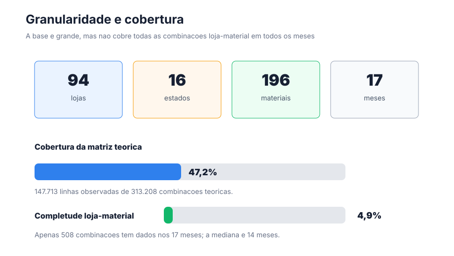
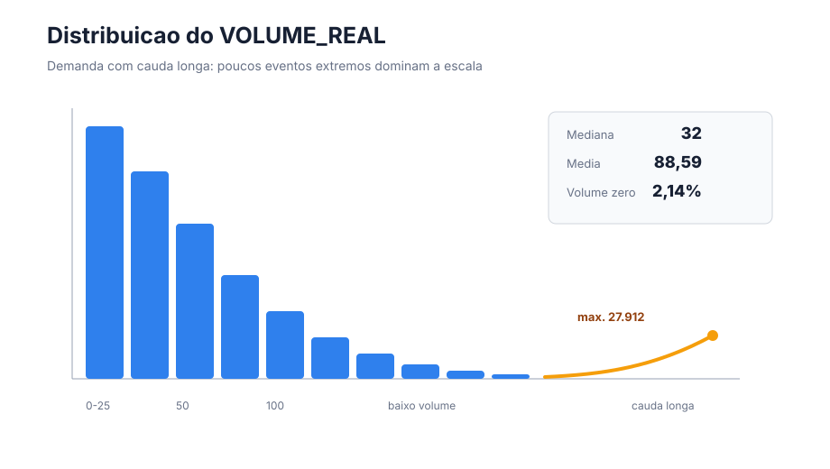
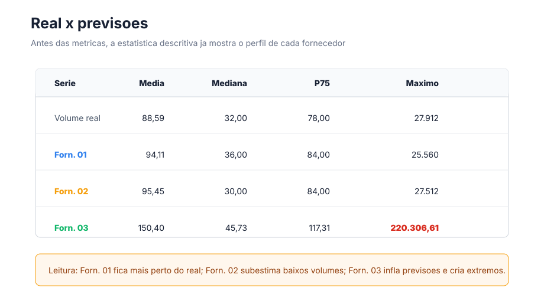
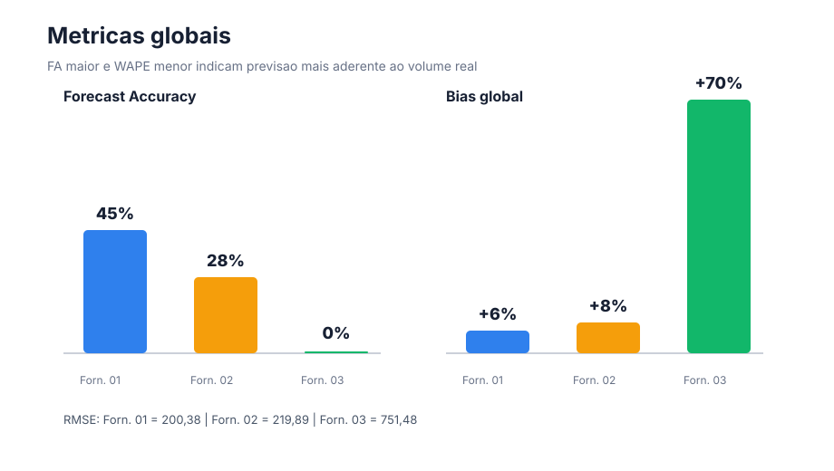
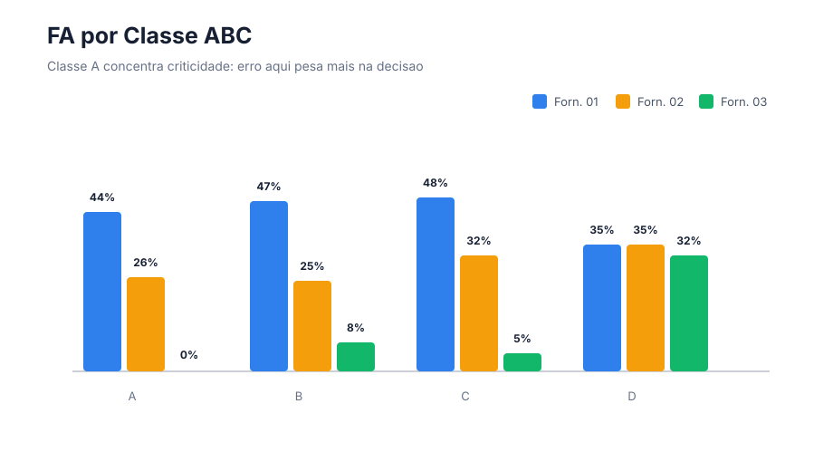
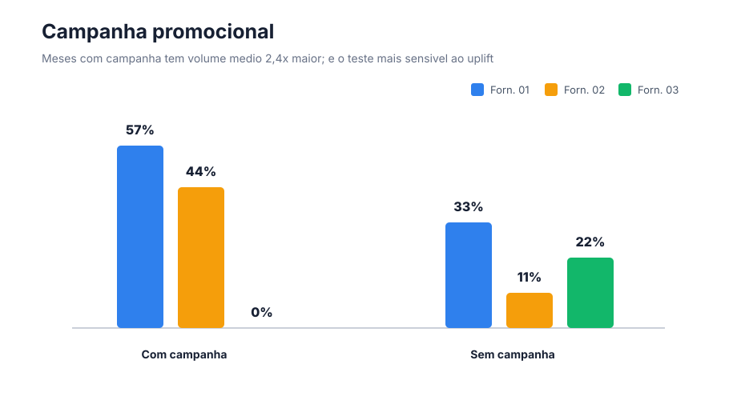
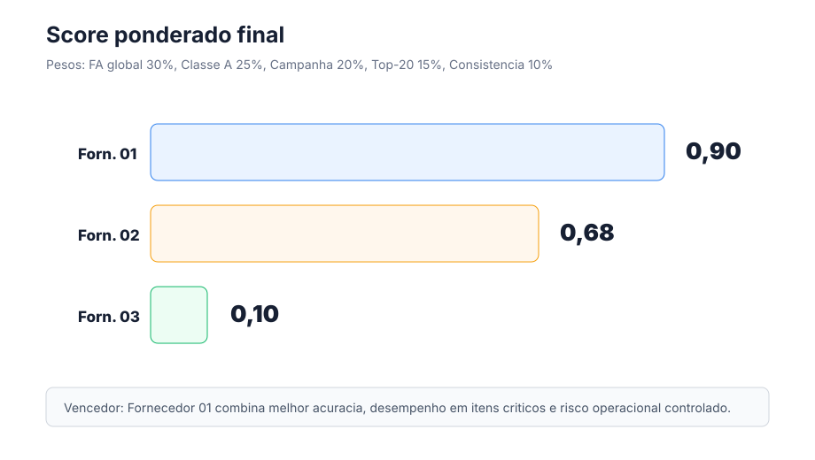

Fornecedor 01
- Melhor FA global e melhor desempenho nos itens Classe A.
- Melhor resposta em campanha e Top-20 SKUs.
- Bias baixo para o contexto: +6%.
- FA ainda exige plano de melhoria contínua.
UX for Data Science
A PoC comparou três fornecedores. A pergunta principal é simples: qual previsão ajuda mais o planejamento de demanda a decidir melhor?
Parte 1 - Problem Statement
Os fornecedores receberam a mesma base histórica e devolveram previsões. A escolha precisa olhar quem erra menos e, principalmente, quem erra menos onde o negócio sente mais.
Parte 1 - Assumptions and Interpretations
A decisão segue o notebook atual: manter extremos, expor falhas de modelagem e comparar os fornecedores de forma direta.
Parte 2 - EDA: granularidade e cobertura
Temos muitas lojas, materiais e meses. Mesmo assim, nem toda combinação loja-material aparece em todos os períodos. Isso é esperado em varejo: há lançamentos, rupturas, sazonalidade e itens que não vendem sempre.

Parte 2 - EDA: distribuição do volume real
A maioria das vendas tem volume baixo, mas existem poucos casos muito grandes. Por isso, a média fica bem maior que a mediana.

Essa assimetria explica por que WAPE e FA são melhores para a decisão. RMSE fica como alerta para erros extremos.
Parte 2 - EDA: real x previsões
Antes mesmo das métricas finais, a distribuição das previsões mostra o comportamento de cada fornecedor.

Parte 3 - Evaluation Metrics
Σ|real - previsto| / ΣrealMostra o erro total em relação ao volume real total.
max(0, 1 - WAPE)É a acurácia da previsão. Quanto maior, melhor.
Σ(previsto - real) / ΣrealMostra se o fornecedor costuma prever acima ou abaixo do real.
média |real - previsto|Mostra o erro médio em unidades.
sqrt(média erro²)Penaliza erros muito grandes. Ajuda a achar falhas graves.
FA global + Classe A + campanha + Top-20 + consistênciaJunta os critérios mais importantes para a decisão.
Parte 4 - Show Metrics Results
No resultado global, o Fornecedor 01 é o mais equilibrado. Ele erra menos no total e tem Bias bem menor que o Fornecedor 03.

Parte 4 - Onde mais importa
O fornecedor escolhido precisa funcionar bem nos cenários mais importantes: produtos Classe A e meses de campanha.

Classe A: Forn. 01 = 44%, Forn. 02 = 26%, Forn. 03 = 0%.

Parte 4 - Robustez operacional
Parte 4 - Strengths and Weaknesses
Parte 4 - Conclusion
O Fornecedor 01 não é perfeito, mas é o melhor equilíbrio entre acurácia, produtos importantes, campanhas e risco operacional.
